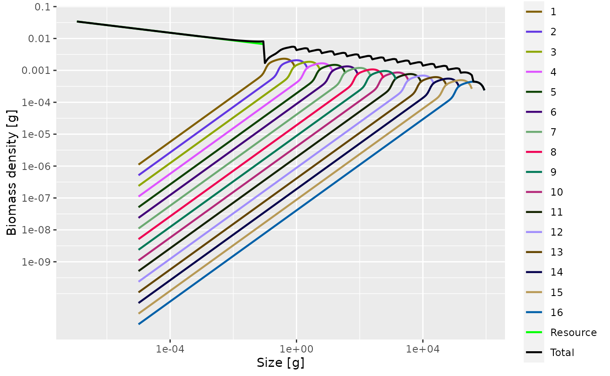
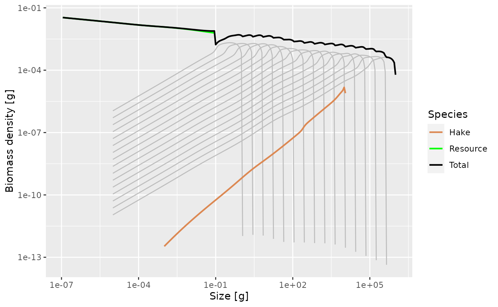
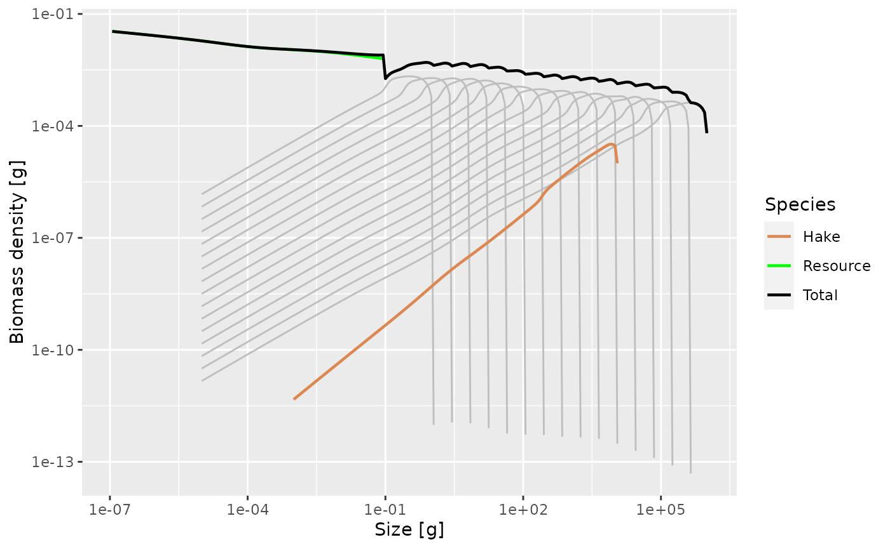
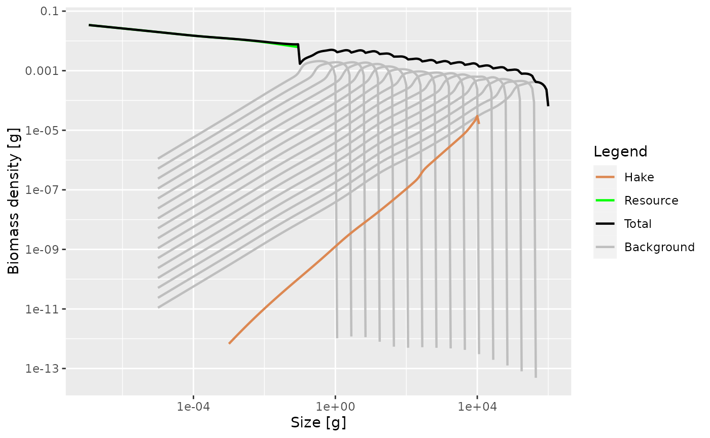

vignettes/first_multispecies_model.Rmd
first_multispecies_model.RmdWe continue our investigation of size-spectrum dynamics in simple examples. Where in the previous tutorial notebook we had studied the size-spectrum dynamics of a single species in a fixed power-law background, here we will study a species in a multi-species background, where the background species interact with the foreground species and vice versa.
Again in this tutorial we are not yet interested in a realistic model, but in a model that helps us to get a feel for the multispecies effects that we can expect. We start looking at the real world only in tomorrow’s notebook.
Start RStudio and load the following packages:
First we will create a generic model consisting of several interacting species. We use another wrapper function newTraitParams() that sets up a MizerParams object choosing a lot of defaults for us.
params_background <- newTraitParams(
lambda = 2.12, # Exponent of community spectrum
no_sp = 16, # Number of species
min_w_inf = 1, # Asymptotic size of smallest species
max_w_inf = 10^6, # Asymptotic size of largest species
min_w = 10^-5, # Egg size
min_w_mat = 0.1, # Maturity size of smallest species
min_w_pp = 10^-12, # Size of smallest plankton
ext_mort_prop = 0.2 # Proportion of mortality that is not due to predation
)
plotSpectra(params_background, power = 2, total = TRUE)
We only had to specify a small number of parameters and the function makes default choices for all the others.
Note how the total community, aggregated over all species and the plankton, follows a Sheldon spectrum with the Sheldon exponent lambda of our choice.
These species will form our background, modelling all the species about which we do not have much information and don’t really care about. We tell mizer about this with
params_background <- markBackground(params_background)This will for example have the effect that these species are plotted in grey. We also don’t want to fish them, so we set their catchability to zero.
gear_params(params_background)$catchability <- 0Let’s look at hake. Let’s assume we know the following parameters for hake:
species_params <- tribble(
~species, ~w_inf, ~w_mat, ~beta, ~sigma, ~a, ~b, ~k_vb, ~l50, ~l25,
"Hake", 10470, 250, 11, 1.1, 0.00667, 3.035, 0.178, 16.6, 16
)
species_params$sel_func <- "sigmoid_length"Here w_inf is the asymptotic size, w_mat the maturity size, beta and sigma the parameters of the log-normal predation kernel, a and b the parameter in the length to weight conversion \(w = a\, l^b\), k_vb the von Bertalanffy growth curve parameter and l50 and l25 the parameters of the sigmoid_length() selectivity function.
In practice you would probably not type them into R as above but create a spreadsheet with the parameters and then read that in with read_csv().
We can now add Hake to our existing model with the addSpecies() function.
params <- addSpecies(params_background,
species_params) %>%
steady()## No h provided for some species, so using f0 and k_vb to calculate it.## Convergence was achieved in 18 years.
plotSpectra(params, power = 2, total = TRUE)
Initially this has added hake with a low abundance, so that there is little effect of the presence of the hake on the background species. We can now slowly increase the abundance of the hake, making sure we always run to steady state.
First we double the abundance of the foreground species with respect to the background species.
params <- scaleAbundance(params, factor = 2) %>%
steady()## Convergence was achieved in 1.5 years.
plotSpectra(params, power = 2, total = TRUE)
Now we double it again, which we can do simply by running the previous R chunk again.
After doing this 4 times we obtain 
The multi-species effects are now clearly visible.
Instead of exploring further by hand, we now switch to a convenient shiny gadget, which provides sliders for changing parameters and a set of plots that update in real time to reflect the effects of the parameter changes. I will demonstrate this on the projector.
params_new <- tuneParams(params)